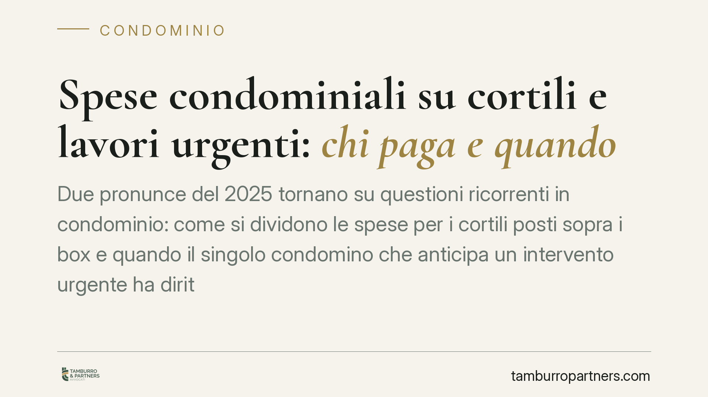

Spese condominiali su cortili e lavori urgenti: chi paga e quando
Due pronunce del 2025 tornano su questioni ricorrenti in condominio: come si dividono le spese per i cortili posti sopra i box e quando il singolo condomino che anticipa un intervento urgente ha diritto al rimborso. Il filo comune è il criterio di ripartizione e i limiti al potere di spesa del singolo. Vediamo i punti pratici.

Il contesto
Il condominio genera conflitti soprattutto su un punto: chi paga, e in quale misura. Due decisioni del 2025 affrontano situazioni frequenti.
La prima riguarda i cortili che fungono anche da copertura dei box sottostanti: una superficie che serve contemporaneamente chi vi transita sopra e chi possiede il locale sotto. La seconda riguarda il condomino che, di fronte a un guasto, anticipa di tasca propria la spesa e poi chiede il rimborso.
Si tratta di orientamenti giurisprudenziali: i riferimenti alle singole pronunce vanno verificati in banca dati prima di assumerli come precedenti consolidati.
Inquadramento normativo
Il Codice civile fissa diversi criteri di riparto. L'art. 1123 c.c. detta la regola generale: le spese si dividono in proporzione al valore delle unità immobiliari (le quote millesimali), salvo diverso accordo. Se una cosa serve i condomini in misura diversa, la spesa si ripartisce in proporzione all'uso.
L'art. 1125 c.c. disciplina le spese per i solai e i soffitti che dividono due piani sovrapposti: il criterio è la ripartizione tra il proprietario superiore e quello inferiore, ciascuno per la parte che lo riguarda. Secondo un orientamento giurisprudenziale, questa logica può estendersi al cortile che funge da copertura dei box sottostanti, assimilato alla funzione del solaio. Va precisato che non si tratta di una previsione testuale della norma, ma di una lettura interpretativa: la riconduzione del cortile-copertura all'art. 1125 c.c. è frutto dell'elaborazione dei giudici, non del dato letterale.
L'art. 1134 c.c., nella formulazione introdotta dalla riforma del condominio (L. 220/2012), limita in modo netto il rimborso al condomino che ha agito di propria iniziativa: chi assume la gestione delle parti comuni senza autorizzazione dell'amministratore o dell'assemblea non ha diritto al rimborso, salvo che si tratti di spesa urgente. L'urgenza è dunque la chiave: senza di essa, l'anticipo resta a carico di chi lo ha deciso.
Implicazioni pratiche
Per i proprietari dei box, la riconduzione del cortile-copertura all'art. 1125 c.c. incide direttamente sui costi. Non tutte le spese vengono trattate allo stesso modo: occorre distinguere.
Gli interventi strutturali sulla soletta – quelli che riguardano la tenuta e la funzione di copertura del box – tendono a gravare secondo il criterio del solaio, coinvolgendo chi sta sopra e chi sta sotto. La pavimentazione superficiale, invece, serve prevalentemente chi transita sul cortile e segue logiche di riparto diverse. La corretta qualificazione del lavoro, già in fase di preventivo, è decisiva.
Per il singolo condomino, l'art. 1134 c.c. impone prudenza. Anticipare una spesa non urgente, senza passare da amministratore o assemblea, espone al rischio concreto di non recuperare nulla. L'urgenza va intesa in senso stretto: un intervento che non può attendere i tempi della convocazione senza pregiudizio per le parti comuni.
Per l'amministratore, la gestione corretta delle emergenze e la chiarezza dei criteri di riparto nei bilanci riducono il rischio di impugnazioni delle delibere.
Cosa fare in concreto
- Qualificare il lavoro nel preventivo: distinguere con precisione tra intervento strutturale sulla soletta e rifacimento della pavimentazione superficiale, perché il criterio di riparto cambia.
- Documentare l'urgenza: il singolo condomino che anticipa una spesa deve conservare prove dell'impossibilità di attendere i tempi ordinari (perizie, segnalazioni, comunicazioni all'amministratore).
- Preferire l'autorizzazione preventiva: dove possibile, far deliberare o autorizzare l'intervento da amministratore o assemblea elimina in radice il nodo del rimborso.
- Verificare la tabella millesimale: opportuna una verifica preventiva della tabella e dei criteri applicati al singolo capitolo di spesa, utile a prevenire impugnazioni e contenziosi sul riparto.
- Controllare i precedenti citati: i riferimenti giurisprudenziali vanno confermati in banca dati, con numero, data e sezione, prima di fondarvi una scelta.
Equilibrio tra diritti
Le due questioni rispondono a una stessa esigenza: bilanciare l'interesse del singolo con quello della collettività condominiale. Il criterio di riparto distribuisce i costi secondo l'utilità effettiva; il limite sul rimborso evita che il singolo imponga agli altri spese decise da solo. Prima di agire, conviene inquadrare correttamente la natura dell'intervento e il perimetro dei poteri di spesa.
Contributo informativo a cura di Tamburro & Partners Avvocati - Avv. Giuseppe Tamburro. Non costituisce parere legale.
Ogni condominio ha una storia a sé.
Se gestisci un'amministrazione e vuoi un confronto su una specifica questione condominiale, scrivi allo studio. Ti rispondiamo entro un giorno lavorativo.